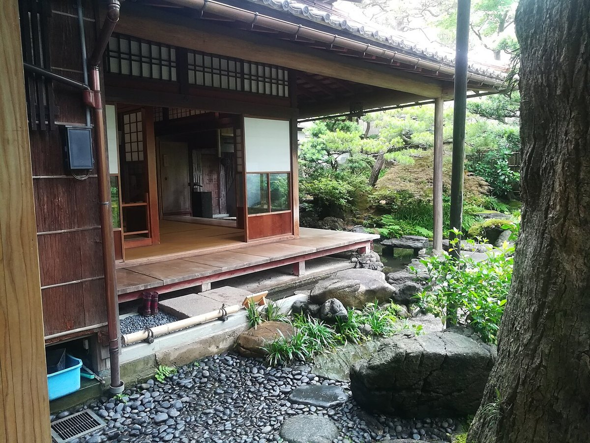
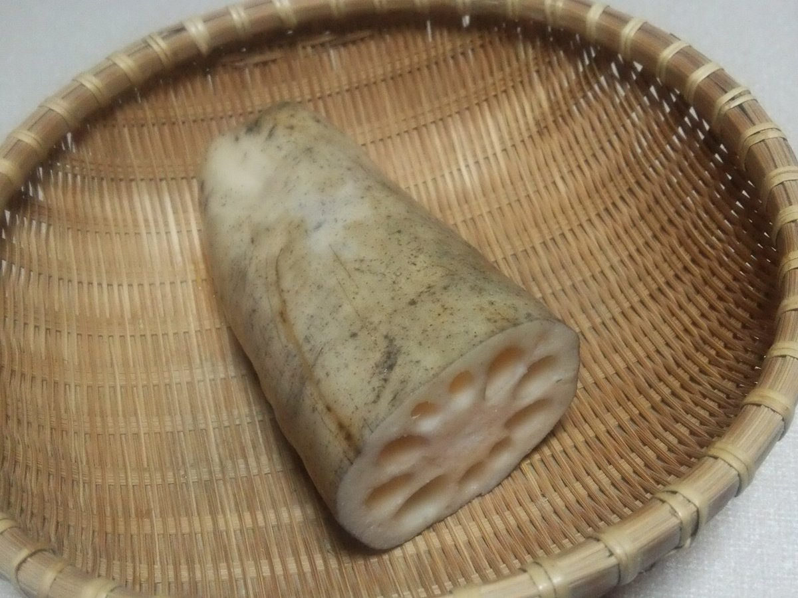

お店について
※制作側の案を含みます。実際の内容はお店にご確認ください
ひと息ついて
コンセプト案(制作側の案です)
ひと息ついて、からだにやさしいごはんを。
日立市宮田町で、健康ごはんの食事処としてお客様をお迎えします。
忙しい日のお昼にも、ゆっくり過ごしたい日にも。そんな時間に寄り添う場所を、イメージしました。
※この文章は制作側の案です。お店の実際の想いは、お店にご確認ください。

こんなときに(利用シーンの例)
- ひとりでゆっくり
- 家族で
- お昼のひと休み
※利用シーンの例です。実際の対応可否は、お問い合わせください。
お店の基本情報
| 店名 | 健康ごはん ゆめこまち |
|---|---|
| 業種 | 健康ごはんの食事処 |
| 住所 | 茨城県日立市宮田町4丁目8-17 |
| 電話 | 080-6232-1822 |
| https://instagram.com/yumecomachi.r | |
| 営業時間 | 準備中(お問い合わせください) |
| 定休日 | 準備中(お問い合わせください) |
| 席数 | 準備中(お問い合わせください) |
| 駐車場 | 準備中(お問い合わせください) |
| ご予約 | 準備中(お問い合わせください) |

スタッフ紹介
準備中(お問い合わせください)